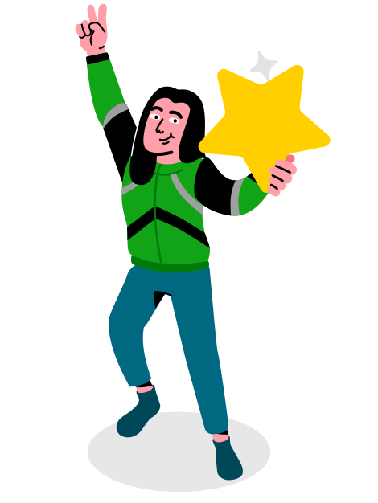
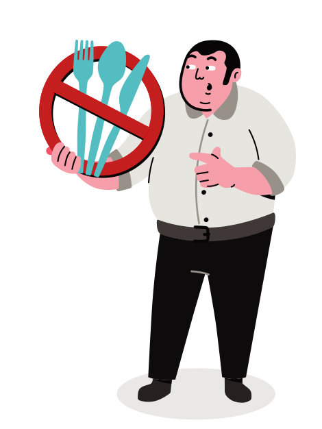

3 negara. 20+ layanan. 1
platform on-demand
terkemuka.
Kenalin, Gojek. Si pembawa perubahan

Fortune Top 20
Satu-satunya perusahaan di Asia Tenggara yang dua kali berada di daftar Perusahaan Pengubah Dunia versi majalah Fortune

Berkontribusi lebih dari $7.1 triliun
Penggerak roda perekonomian Indonesia

Jaket hijau, pergerakan juga hijau
Gojek mengurangi pemakaian plastik hingga 11.3 ton sejak Oktober 2020

Tumbuh 80% sejak pandemi
Mitra Food merchants naik 80% sejak pandemi berkat solusi digitalisasi Gojek untuk UMKM.